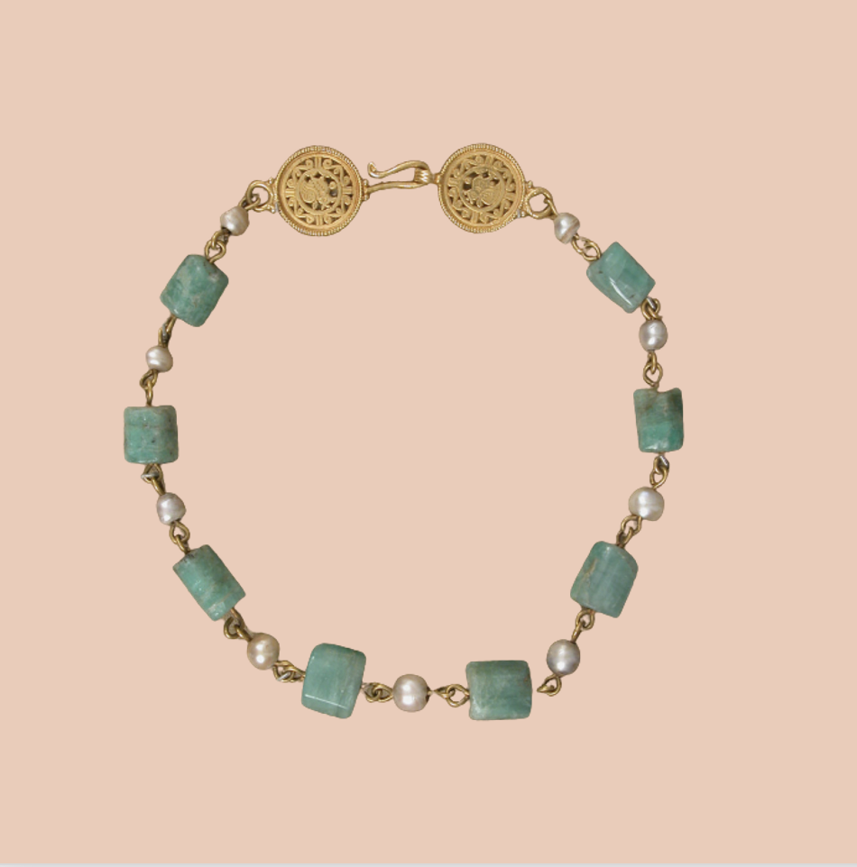

S O L N E C K L A C E
Inspired by the sun, this understated piece is perfect for all occasions and is made from 18 kt rose gold and hand carved green jade.
$650

O C E A N N E C K L A C E
This statement piece, mixing bold green jade with understated freshwater pearls, is one of our favorites.
$725

S T O R M Y N E C K L A C E
Composed of cloudy globes, this necklace evokes images of stormy seas and is sure to make an impression wherever you go.
$900